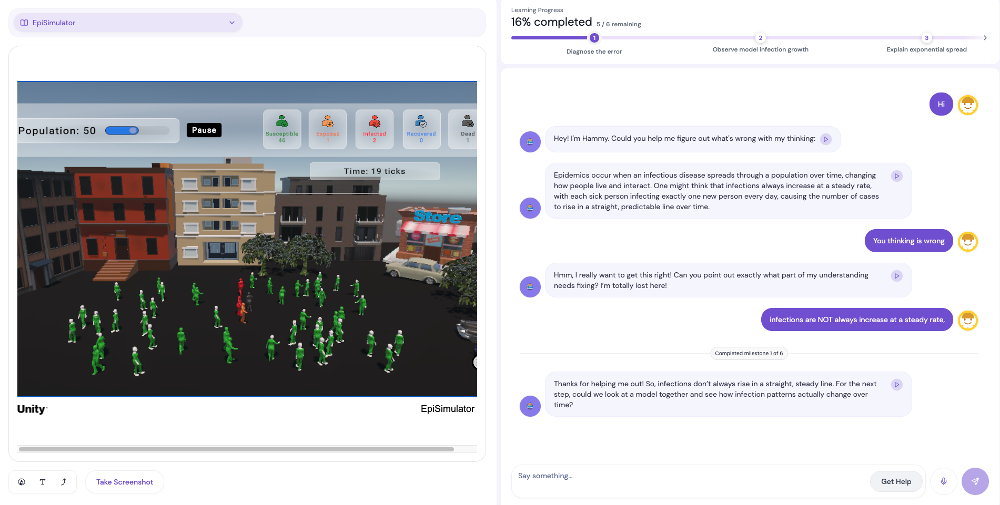

Research Program
SMILE 🧩
Systems Modeling in Intelligent Learning Environment
Learn complex systems by stepping inside them.
Three interactive learning environments connect simulation-based virtual worlds with AI-supported conversations. Learners
explore complex systems, make decisions, and explain how systems change.
🐑 Flocking
🌍 Climate

🦠 Epidemics
Explore the program
Different forms of human-AI agency.
Select a project to see how different forms of human-AI agency unfold.
🐑 Flocking
🌍 Climate
🦠 Epidemics
Project 01
Flocking Simulator
Follow your curiosity and uncover how local interactions create collective patterns.
Topic Animal flocking and emergence
Learner action Explore freely, manipulate simulation parameters, decide when to chat with the AI agent
AI agent On demand Butterfly Tutor grounded in complexity framework
More Info →
Project 02
Climate Change Simulator
Take a perspective, weigh competing priorities, and watch the planet respond.
Topic Climate dynamics and policy trade-offs
Learner action Choose a role and invest limited Power Coins
AI agent Context aware tutor Bobby explains each consequence
More Info →
Project 03
EpiSimulator
Adjust interventions, slow the spread, and explain why the outbreak changes course.
Topic Epidemic spread and public health measures
Learner action Manipulate simulation parameters, engage with AI agent, and monitor learning milestones
AI agent Inquiry driven peer agent or misconception driven teachable agent
More Info →
Big Question
How can AI-supported simulation environments help learners understand complex systems while making meaningful, informed choices?
Conceptual understanding
Learner agency
Human AI interaction